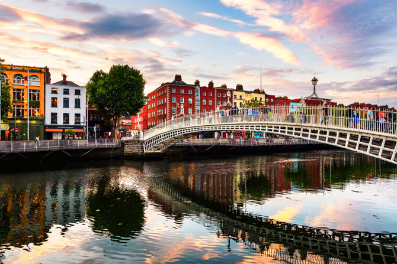

Welcome to the blog! I'm Oisin and I'm a 23 year old from Dublin Ireland.
I wanted to create a platform where people around the world can share their thoughts and experiences on a wide range of topics from technology to their favourite sports. Join me on this journey!
